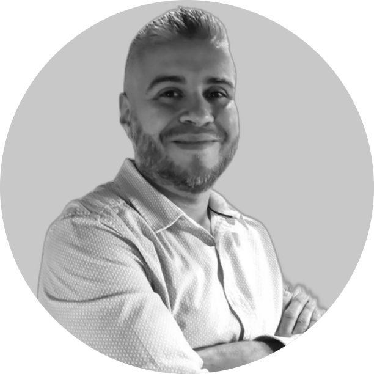

JAIDER VELÁSQUEZ AGUDELO

Ciudad: Envigado
Contacto: 3014050982
Email: jaider.velasquez@outlook.com
Perfil de linkedin: https://www.linkedin.com/in/jaider-velasquez
Perfil profesional
Experiencia laboral
Estudios
Referencias
PERFIL PROFESIONAL
Ingeniero en sistemas con especialización en Gestión Estratégica de la Innovación, 2 años de experiencia técnica y 6 años como profesional liderando y gestionando equipos de trabajo de las áreas de Tecnologías de la Información. Enfocado a desarrollar soluciones y estrategias para el mejoramiento de los procesos internos y obtener los resultados propuestos. Capacidad para gestionar datos a través de Microsoft Excel y Power BI para la generación de informes para la toma de decisiones. Administración y manejo de plataformas Microsoft 365, Windows Server, Directorio Activo, Microsoft Office 365, VMware, Asterisk, Google Apps, plataformas Linux, redes de datos, entre otros. Habilidades para gestionar la documentación y registros de los procesos del SGI según la norma ISO 9001 y SGSI 27001:2013. Capacidad de trabajo enfocado al cliente y capacidad de solucionar problemas complejos. Con conocimiento para llevar a cabo los procesos de contratación de servicios y compras de TI dentro de la empresa según requisitos normativos y legales. Gran capacidad y motivación para aprender y adquirir nuevas habilidades. Con formación para la gestión de la innovación impregnando nuevas ideas a las actividades cotidianas para mejorar los resultados.
Soy una persona amable, paciente y comunicativa, tengo muy buenas relaciones interpersonales y facilidad para el aprendizaje además de tener gran curiosidad por aprender y aportar significativamente a los proyectos propuestos por la empresa, tengo grandes expectativas de trabajar con nuevos equipos de trabajo a los cuales les pueda aportar positivamente con mi conocimiento y a su vez aprender de las experiencias de mis semejantes y actualmente estoy en búsqueda de nuevas experiencias laborales relacionadas a mi conocimiento y experiencia adquirida que me permitan crecer personal y profesionalmente y para ello estoy dispuesto a enfrentar los retos académicos necesarios para lograr este objetivo.
EXPERIENCIA LABORAL
CEFIT | Contratista Sistemas | 26 de junio de 2012 – 6 de julio de 2016
Durante la ejecución de esta experiencia se logró mitigar diferentes problemas relacionados con la infraestructura de TI que ocasionaban continuos problemas para la ejecución de actividades académicas y administrativas, además de lograr bajar los índices de inconformidad por la inestabilidad de los servicios tecnológicos. Se realizaron mejoras en la infraestructura de redes de datos y redes inalámbricas, se planificaron las actividades requeridas para el sostenimiento adecuado de la infraestructura de TI.
CEFIT | Técnico Administrativo Sistemas | 8 de noviembre de 2013 - 7 de julio de 2016
En mi experiencia como Técnico Administrativo se logró la implementación de plataformas para el trabajo colaborativo en la empresa a través de Google Apps, además de mejorar la experiencia de los usuarios con los servicios tecnológicos ofertados por el área de TI. Se gestionaron y administraron las herramientas requeridas para adecuar una plataforma LMS de educación virtual y para habilitar la educación a distancia en la institución.
CEFIT | Profesional Universitario en Tecnología | 8 de julio de 2016 - 3 de septiembre de 2018
Como Profesional Universitario se logró la mejora de los procesos de contratación de TI, se realizaron mejoras significativas en la intranet institucional, se construyó y ejecuto un proyecto para la mejora del cableado estructurado de redes de datos y redes inalámbricas, esto impactó significativamente ya que la gestión administrativa fue más eficiente gracias a los nuevos canales de comunicación aportando a su vez a la reducción de gastos por el no uso de papel. Se documentaron políticas para la seguridad de la información y protección de los datos personales, se habilitaron mecanismos de identificación para el reconocimiento del personal administrativo y docente a través del sistema de información académico y se realizaron mejoras en el centro de datos de la institución que fortalecieron la seguridad de la información.
CEFIT | Profesional Universitario en Sistemas | 4 de septiembre de 2018 - 30 DE JUNIO DE 2020
En mi cargo como profesional en sistemas se lograron sentar las bases para la implementación de controles de seguridad de la información según ISO 27001:2013, se ejecutaron las actividades de migración del portal web lo que le permitió a la entidad ahorrar recursos, a su vez se realizaron actividades con el proceso misional para habilitar los tramites y pagos completamente en línea, se realizó la migración de la plataforma de correo electrónico a Microsoft 365, se realizó el cambio de plataforma de redes a la plataforma Mikrotik para habilitar servicios de VPN y mejorar el rendimiento de las comunicaciones y se implementó el servicio de telefonía Asterisk a través de IP lo que redujo los costos de este servicio. El trabajo realizado durante esta experiencia le permitió a la institución prestar sus servicios a la comunidad sin interrupciones durante el aislamiento ocasionado por el Covid 19 porque, al contar con la información en los servicios de nube, contar con VPN para la conectividad a los servicios institucionales, contar con los controles para la gestión segura de la información se logró continuar con la prestación de los servicios a la comunidad sin interrupciones.
CEFIT | Subdirector en Tecnologías de la Información e Innovación | 1 DE JULIO DE 2020 – 12 JULIO DE 2022
En mi desempeño como líder y subdirector del área de TI+I se lograron hitos importantes como la implementación de la gestión documental electrónica a través de software, cumpliendo con los estándares y normas del Archivo General de la Nación, esto permitiendo la agilización de los procesos del negocio y la reducción de costos por el no uso de papel e insumos de impresión, se logró la implementación del proceso de mesa de ayuda del área de TI lo que mejoró considerablemente el registro de solicitudes para una mejor prestación de los servicios y a su vez obtener datos para la mejora del proceso. Se realizaron las capacitaciones y adecuaciones para habilitar los criterios de accesibilidad web W3C con el fin de mejorar el acceso a la información. Se estandarizo el proceso para la identificación de ideas y la gestión de la innovación y se trabajó con las herramientas disponibles para la automatización de trámites y servicios en la entidad. Se realizó la sensibilización y apropiación de las tecnologías existentes para un uso responsable de las mismas y garantizar la seguridad de la información.
ESTUDIOS
APTITUDES
- Proyección y compromiso para lograr las metas y objetivos.
- Ambición de conocimiento.
- Liderazgo.
- Enfoque a la planeación.
- Capacidad de trabajar con equipos de trabajo.
- Inteligencia emocional.
- Creativo e innovador.
REFERENCIAS
CONOCIMIENTOS
A continuación, describo algunas actividades que se llevaron a cabo durante mi último cargo y que considero aportan valor al cargo que desempeño actualmente:
- Participación en el Concejo de Ciencia Tecnología e Innovación liderado por el Municipio de Envigado para activar la economía naranja en el territorio municipal,
- Participación en actividades institucionales para la promoción de la cultura de innovación y gracias a ello se obtuvo reconocimiento como funcionario más innovador de la vigencia 2021.
- Participación en la construcción de presupuestos para el funcionamiento institucional.
- Implementación de las estrategias de Gobierno Digital para la generación de valor y el mejoramiento de los servicios que se prestan al ciudadano.
- Participación en programas de capacitación y formación relacionada con la gestión de tecnologías de la información.
- En mi experiencia laboral también se realizaron actividades de capacitación al personal administrativo y docentes en temas relacionados a la adopción de TI y seguridad digital.
- Agrego que en mi experiencia laboral me desempeñe como docente por 2 años en temas relacionados con TI y en caso de considerarse necesario aportare las debidas certificaciones si se considera pertinente para el cargo a desarrollar.
Ejemplo